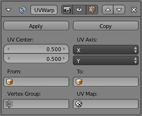

UV偏移修改器¶
The UV Warp Modifier uses two objects to define a transformation which is applied to the chosen UV coordinates.
其目的是在3D视图里给予直接的物体控制，允许你用控制器或骨头来直接平移、旋转和缩放现有的UV坐标。
选项¶

- UV中心
- The center point of the UV map to use when applying scale or rotation. With (0, 0) at the bottom left and (1, 1) at the top right. Defaults to (0.5, 0.5).
- UV轴向
- 映射3D坐标到2D坐标所用的轴。
- From, To
- 用来定义变换的两个物体。见下面的 用途。
- 顶点组
- 顶点组可以用来缩放每个顶点的变换的影响程度。
- UV映射
- Which UV map to modify. Defaults to the active rendering layer.
用法¶
UV包裹的方式取决于 从 和 到 物体的变换（位置，旋转和缩放）的差异。
如果 到 物体与 从 物体有一样的变换，则UV不会发生改变。
假设修改器的 UV轴 是 X/Y，物体的缩放系数是(1, 1, 1)，如果 到 物体在X轴上离 从 物体一个单位远，UV将在U轴(水平)平移一个完整的UV空间（整个图像的宽度）。